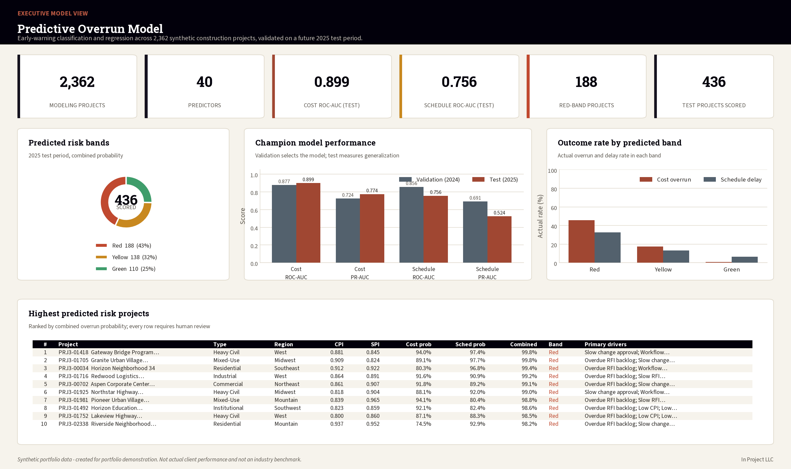
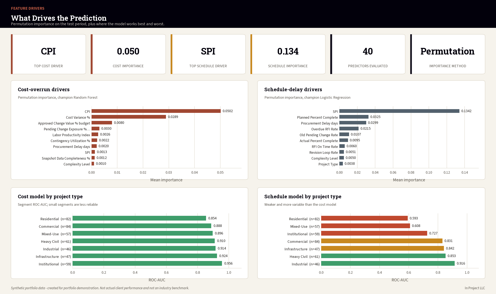

Narciso M. Dickson · Construction Analytics Portfolio
Predictive Construction Project Overrun Model
Early-warning classification and regression for construction cost overruns and schedule delays, with time-based validation, explainability, and model governance.
Test performance
0.899Cost ROC-AUC
0.774Cost PR-AUC
0.756Schedule ROC-AUC
0.524Schedule PR-AUC
Business problem
Which early and mid-project indicators best predict material cost overruns and schedule delays, and where should management intervene?
All records are synthetic. Performance is not an industry benchmark, and predictions do not authorize autonomous project decisions.

Methods
PythonSQLSQLiteExcelPower BITableauLogistic RegressionRandom ForestModel Governance

What the project demonstrates
Leakage-controlled feature design using Project 1 and Project 2 concepts.
Train, validation, and future test periods.
Classification, regression, calibration, segment review, and feature importance.
Human review, monitoring, override, and retraining controls.